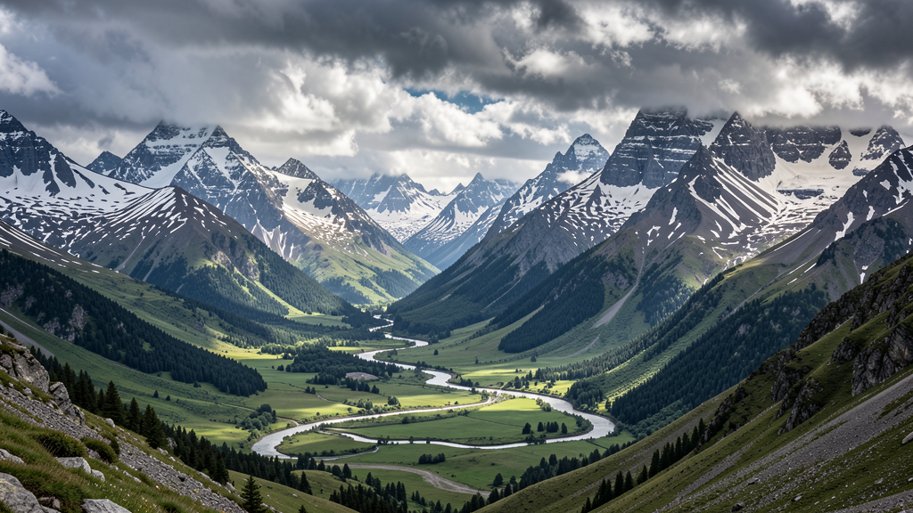
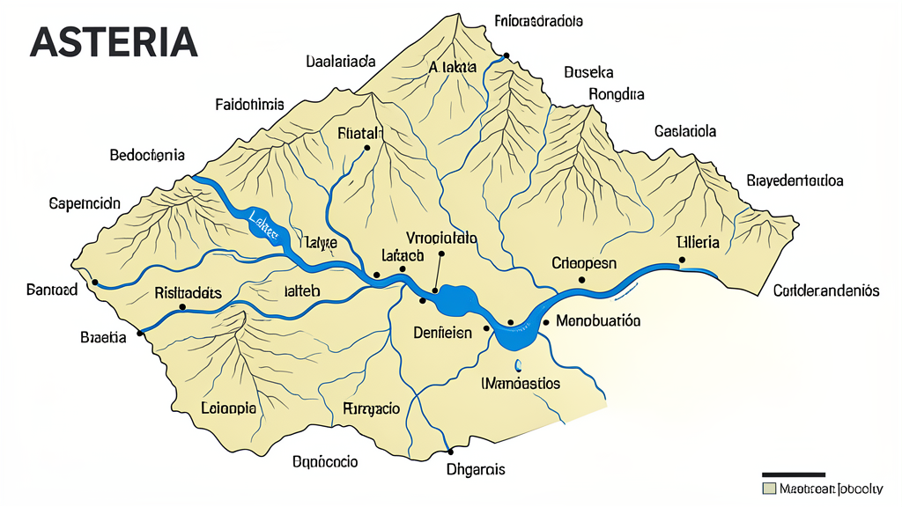
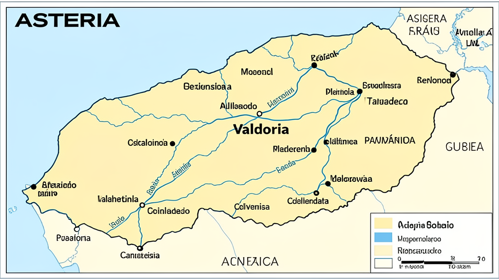
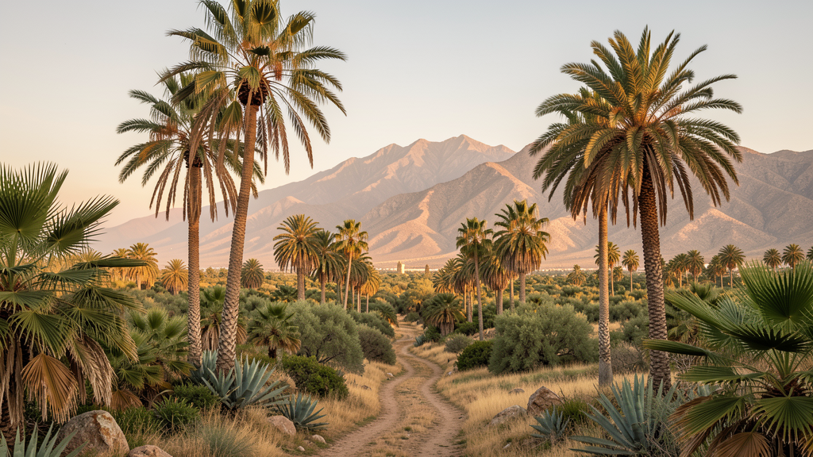
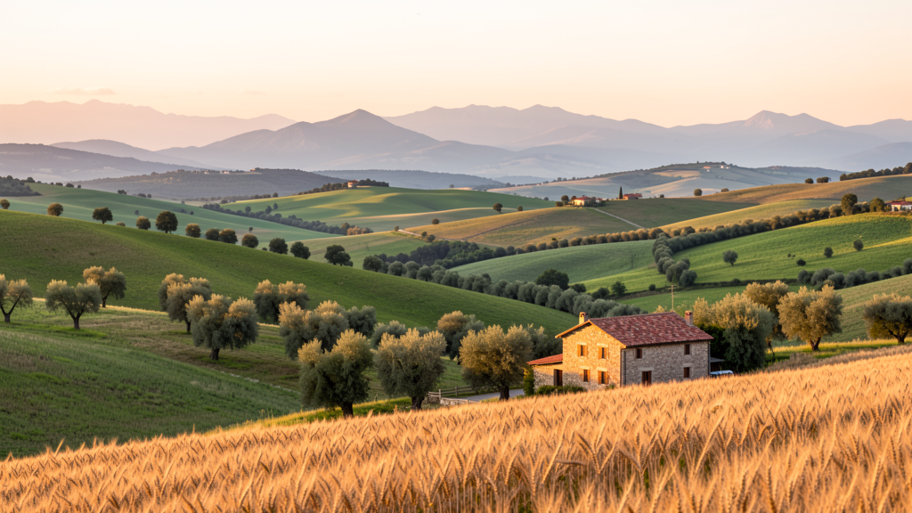
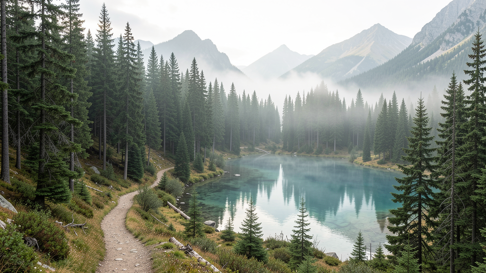

Geografía de Asteria
Relieve
Asteria se asienta sobre el macizo central Sierra de los Vientos, que alcanza 3 450 m en el Pico de la Bruma. Desde allí, el terreno desciende en terrazas hacia tres litorales distintos. Cada costa tiene su propio carácter: la Costa Dorada al oeste, con acantilados calizos y playas de arena fina; la Costa del Alba al este, donde el Río Lumin forma un delta fértil y el puerto principal; y el Golfo de los Suspiros al sur, de clima subtropical y aguas mansas.

Hidrografía
El agua es la arteria de Asteria. El Río Lumin (520 km) nace en la Sierra, atraviesa la capital Valdoria y desemboca en el Golfo de los Suspiros. El Río Verdejo (310 km) riega la llanura central como afluente por el norte. La Laguna Celeste (90 km²) sorprende con sus aguas turquesas y propiedades terapéuticas. Todo el sistema está conectado por el Canal de Centinela, obra de ingeniería del siglo XX que une el delta con la Costa Dorada.

Mapa oficial
Forma irregular similar a Austria. Vecinos: Reino de Nordvel (norte), Principado de Lysgard (noreste), República del Sol (sur y sureste), Océano Libertad (oeste).

Capital: Valdoria
Ciudades principales: Puerto Estrella (620 mil), Barlovento (410 mil), Monteverde (280 mil).
Clima y biomas
Asteria posee cuatro zonas climáticas claramente diferenciadas. En la zona norte de la Sierra, el clima es alpino, con prados de altura y bosques de pináceas. La zona central disfruta de un clima continental templado, con praderas y bosque mixto ideal para la agricultura. La zona sur del delta tiene clima mediterráneo subtropical, con palmeras y matorral. Y la costa oeste disfruta de un microclima oceánico, con lluvias frecuentes y acantilados cubiertos de musgo.
Imágenes adicionales
La diversidad paisajística de Asteria no se limita a un solo bioma. En el sur del país, el paisaje mediterráneo se mezcla con montañas rocosas creando un microclima único.

Los valles centrales están salpicados de pequeñas granjas con techos de teja roja, olivares y campos de trigo que se pierden en el horizonte.

Los parques nacionales protegen bosques vírgenes de pinos y lagos cristalinos donde el silencio solo lo rompe el canto de los pájaros.

Ficha demográfica (2025)
- Población total: 5 470 000 habitantes
- Esperanza de vida: 81,4 años
- Distribución: Urbana 74% / Rural 26%
- Densidad: 96 hab/km²
- Crecimiento anual: +0,8%